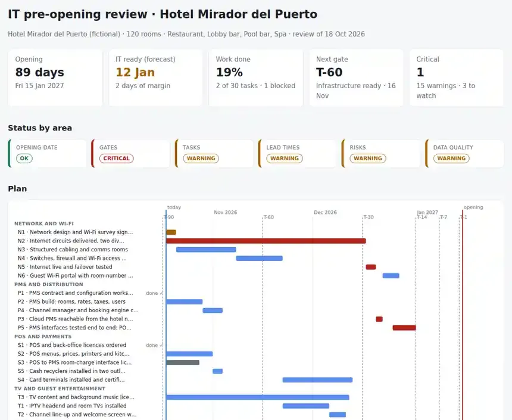

En la pre-apertura de un hotel los circuitos de internet tardan 75 días en llegar, y casi todos los demás sistemas de IT dependen de ellos. El tracker que acompaña a este post convierte la lista de tareas en un calendario que muestra qué retraso mueve la apertura. Su demo usa un hotel vacacional inventado de 120 habitaciones que abre en enero, con 30 tareas en nueve áreas y retrasos puestos a propósito.
El PMS en la nube, el sistema de gestión del hotel, se retrasa con la línea, igual que el interfaz de cargos a habitación, los cargos de llamadas y las pruebas de interfaces. La formación solo empieza cuando los interfaces están probados, y el ensayo general lo necesita todo.
Camino crítico e hitos de T-90 a T-1
Con duraciones, dependencias y avance, la herramienta calcula fechas previstas, holgura, el margen de una tarea antes de retrasar a otras, y el camino crítico hasta el día en que IT está lista. Los hitos van de T-90, diseño cerrado, a T-1, listos para abrir. Marca hitos pasados con tareas abiertas, tareas que llegan tarde, trabajo bloqueado, tareas que tienen que empezar esta semana y un registro de riesgos.
El resultado es report.html con un diagrama de Gantt, review.md para la reunión semanal, actions.csv y una lista de puesta en marcha para T-7, T-1, el día de apertura y la primera semana.
Cómo usarlo con datos reales
El plan se exporta con los plazos reales de los proveedores y las dependencias. Se ejecuta antes de cada reunión semanal, a diario desde T-7, con la lista impresa para el ensayo general.
De dónde sale
Nace de años dando soporte a TPV, PMS hotelero e IPTV en una consultora tecnológica, donde lo que decide una apertura son los interfaces y los plazos de entrega, no la instalación de cada sistema.
¿Quieres llevarlo a tu entorno o adaptarlo a tu caso? Escríbeme y lo vemos.
Tech Career Lab · newsletter
¿Te ha servido? Cada dos semanas envío una idea práctica para perfiles IT: LinkedIn, proyectos, networking y procesos de selección.
Apúntate y llévate las 33 ideas →